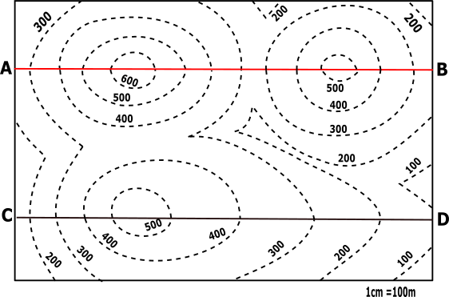
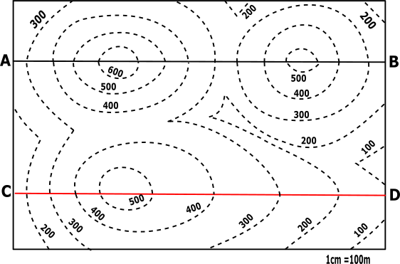
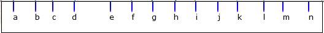
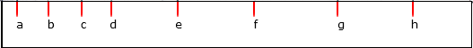

CONTOUR MAP
Objective:
- Draw profiles along AB and CD.
- Note: Use centimeter graph sheets. Horizontal and Vertical scales are the same.
Pre-requisites:
Topographic map
 Description
Contour lines: are curved, straight or a mixture of both lines on a map describing the intersection of a real or hypothetical surface with one or more horizontal planes.
Description
Contour lines: are curved, straight or a mixture of both lines on a map describing the intersection of a real or hypothetical surface with one or more horizontal planes.
Identify the lines about which the profiles are to be drawn.



Lines to be considered for profiles to be drawn:
Mark all the points obtained by the intersection of the dotted line with the line AB and CD of the given contour map.


For AB:
| Points | X-Co | Y-Co |
|---|---|---|
| a | x1 | 300 |
| b | x2 | 400 |
| c | x3 | 500 |
| d | x4 | 600 |
| e | x5 | 600 |
| f | x6 | 500 |
| g | x7 | 400 |
| h | x8 | 300 |
| i | x9 | 300 |
| j | x10 | 400 |
| k | x11 | 500 |
| l | x12 | 500 |
| m | x13 | 400 |
| n | x14 | 300 |
| Points | X-Co | Y-Co |
|---|---|---|
| a | x1 | 200 |
| b | x2 | 300 |
| c | x3 | 400 |
| d | x4 | 500 |
| e | x5 | 500 |
| f | x6 | 400 |
| g | x7 | 300 |
| h | x8 | 200 |
Identify X-axis and Y-axis taking X as origin and define scale.
For AB profile line: Plot the points taking its distance from X as x coordinate and the index values of the corresponding line as y coordinate.
| Points | X-Co | Y-Co |
|---|---|---|
| a | 50 | 300 |
| b | 160 | 400 |
| c | 240 | 500 |
| d | 350 | 600 |
| e | 520 | 600 |
| f | 620 | 500 |
| g | 720 | 400 |
| h | 840 | 300 |
| i | 930 | 300 |
| j | 1040 | 400 |
| k | 1130 | 500 |
| l | 1260 | 500 |
| m | 1350 | 400 |
| n | 1470 | 300 |
For AB profile line: Draw a line perpendicular to x axis passing through Y’, Now the graph shall bound between the y axis and the line through Y’. Join all the plotted points on the graph free hand.
For CD profile line: Plot the points taking its distance from X as x coordinate and the index values of the corresponding line as y coordinate.
| Points | X-Co | Y-Co |
|---|---|---|
| a | 50 | 200 |
| b | 150 | 300 |
| c | 260 | 400 |
| d | 360 | 500 |
| e | 580 | 500 |
| f | 830 | 400 |
| g | 1130 | 300 |
| h | 1350 | 200 |
For CD profile line: Draw a line perpendicular to x axis passing through Y’, Now the graph shall bound between the y axis and the line through Y’. Join all the plotted points on the graph free hand.
Profile View Graphs


Both ends of the pipe must be trimmed to ensure parallel faces.